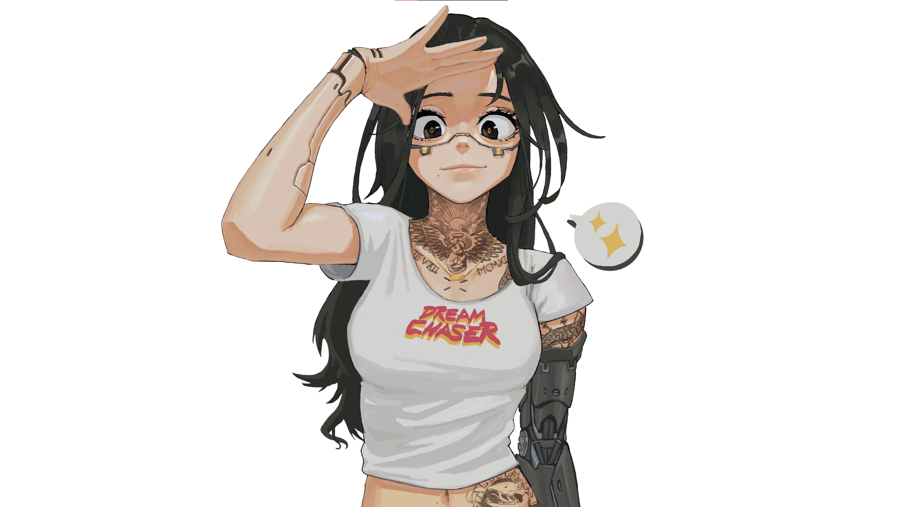

Programming Web dengan HTML
Teknologi Informatika
Selamat datang pada halaman website kami. Silakan Anda mencari informasi di website ini, semoga Anda mendapatkan tambahan wawasan dan pengetahuan.
Pada halaman ini akan membahas seputar script HTML dan cara mempercantik tampilan web dengan menggunakan CSS (Cascading Style Sheet).
Profil
Pengalaman adalah ilmu yang paling berharga yang dapat kita peroleh di mana saja, kapan saja, dan tidak harus duduk di bangku sekolah resmi.
Belajar dari pengalaman membuat seseorang menjadi lebih berhati-hati dalam segala tindakan atau dalam mengambil keputusan.
Hari ini saya mempunyai pengalaman belajar membuat web. Belajar web tidaklah sulit — yang penting harus berlatih terus.

Galeri
Beberapa hasil karya dan dokumentasi kegiatan Universitas Pamulang.
Kontak
Universitas Pamulang
Jl. Surya Kencana No.1 Pamulang – Tangerang Selatan
Website: www.unpam.ac.id
Email: info@unpam.ac.id
Telp: 021 - 7412566
Fax: 021 - 7412566